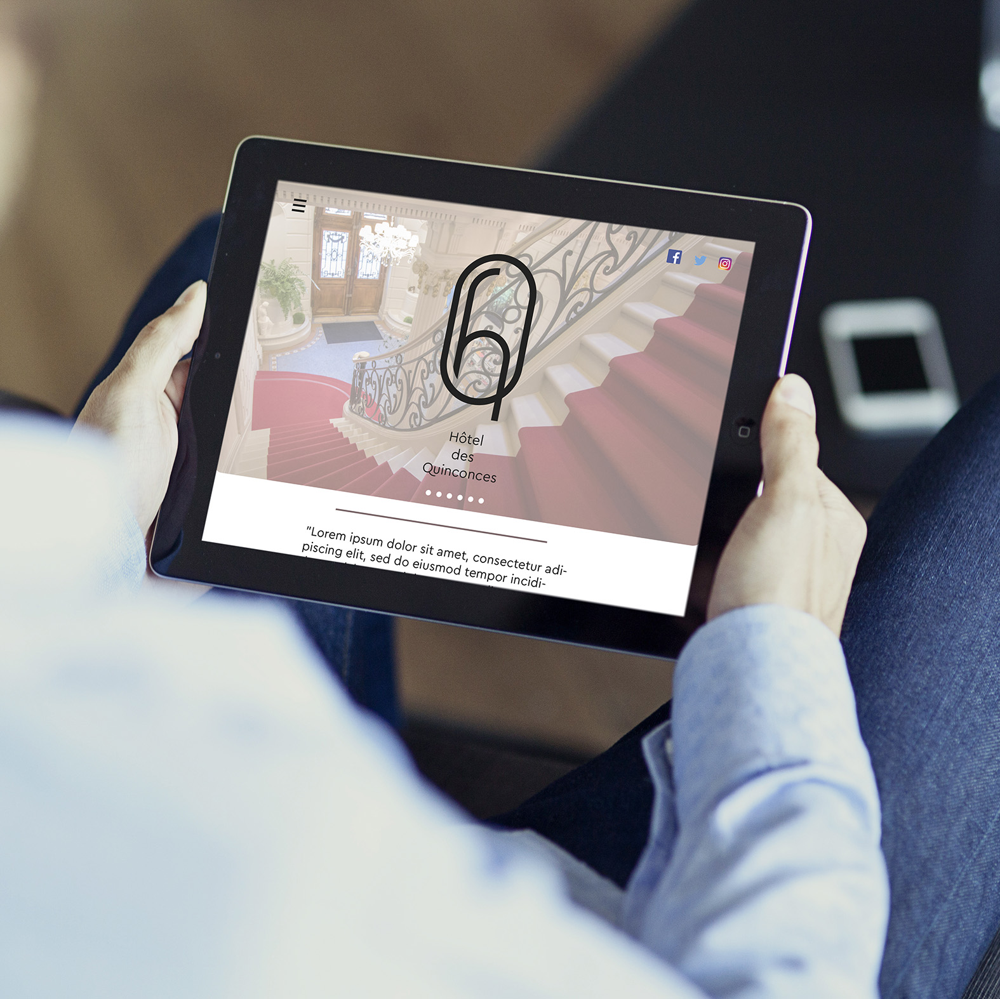
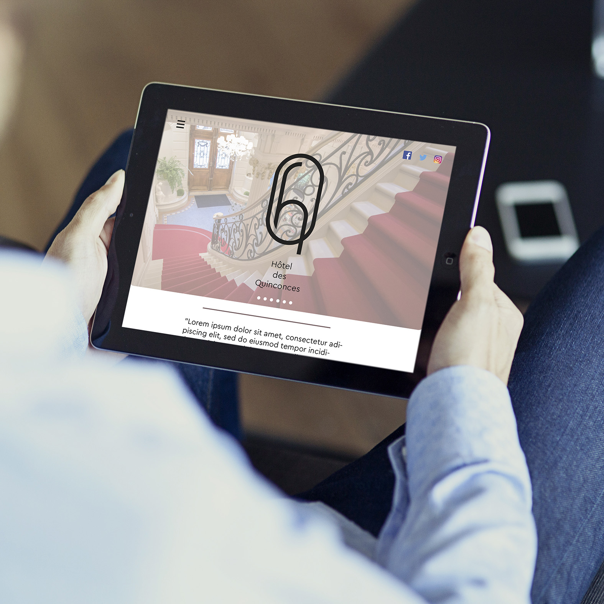

Toujours dans le cadre de nos cours de communication digitale, ce projet propose une expérience digitale au sein de l’hôtel 4 étoiles des Quinconces. Le but était de faciliter le séjour des clients, ainsi que de les fidéliser. Pour cela, nous avons réalisé une application qui propose et informe les clients sur les activités de l’hôtel et sur la ville de Bordeaux. Une tablette électronique est mise à disposition dans les chambres de l’hôtel pour faciliter le room service, ou encore pour réserver une visite de la cave de l’hôtel, accéder aux newsletters de l’hôtel, adhérer à une communauté Facebook permettant de partager des moments ou des informations en temps réel sur l’hôtel.